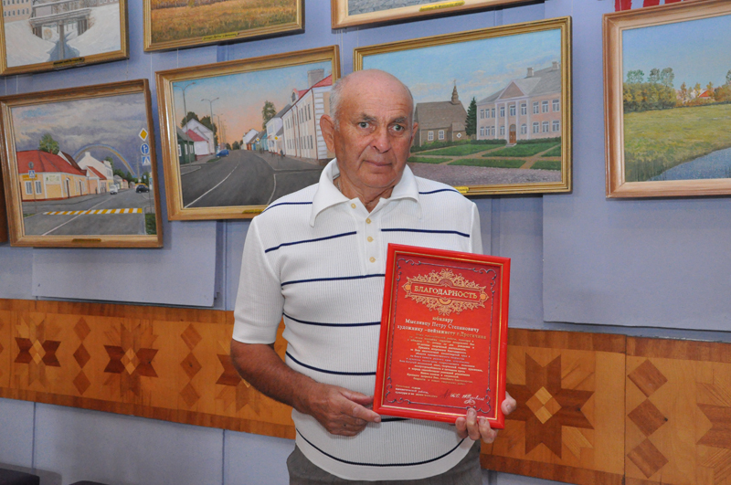

Петр Степанович Мысливец

В народе бытует такое выражение: «Человек смотрит, а художник видит». С этим нельзя не согласиться, ведь только творческая натура способна распознать в обычном для многих летнем или зимнем пейзаже нечто удивительное, чудесное, неповторимое. Один из таких людей, житель Дрогичина П.С. Мысливец, посвятил живописи всю жизнь, получил соответствующее образование, несмотря на обстоятельства, в разные годы пытавшиеся увести мастера кисти в сторону от его призвания.Петр Степанович с детства проявлял интерес к рисованию. Часто доставал из печи угли и тайком пытался рисовать на печке незамысловатые узоры, а, бывало, найдя кусок мела, старательно «расписывал» двери сарая, забор. Мама тогда ругала, не подозревая, что за этим стоит ранняя склонность мальчика к художеству, отец на подобные «творческие попытки» реагировал спокойно, без нареканий. Сейчас, когда Петр Степанович в своей мастерской достает из коробки специальный рисовальный уголь, проводит по холсту первые линии, понимает, что те детские безобидные «художества» были началом его творческого пути.
За свой жизненный путь наш собеседник создал немало картин. Многие из них он передал в музей «Бездежский фартушок», несколько работ сейчас находятся в Военно-историческом музее им Д.К. Удовикова, в Дрогичинском ГДК. Принадлежит кисти Петра Степановича и целый цикл картин на тему деревянного зодчества Дрогичинщины, куда попали многие из православных храмов нашего района. Но ближе всего художнику именно пейзажная тематика. Чаще всего на его холстах можно узнать знакомые места родного полесского края.В июле 2013 г. Петр Мысливец отметил свое 75-летие. За все эти годы он лишь дважды покидал родной Дрогичин. После окончания местного училища механизации по комсомольской путевке работал на целине, а затем проходил срочную военную службу на Дальнем Востоке. Ночами в чужой стороне Петру Степановичу снился родной город, природа милой сердцу белорусской земли.Вот уже на протяжении полувека на своих полотнах художник запечатлевает родные пейзажи. Каждые пять лет Петр Степанович держит творческий отчет, выставляя свои работы в Дрогичине, Пинске, Бресте. Но если прежде художник отдавал предпочтение матушке-природе, то на этот раз он обратился к истории райцентра, показав на своих полотнах, как выглядел город в довоенные годы и как создавался его нынешний образ.
Начало 80-х годов. Петр Мысливец делает набросок очередной картины
Петр Мысливец и в 80 лет продолжает писать пейзажи. Правда, говорит уже меньше стал выезжать делать этюды, потому что сложнее стало перемещаться, теперь больше работает дома в мастерской.В 2018 г. в Пинском музее белорусского Полесья открылась выставка работ дрогичинского пейзажиста Петра Мысливца. Художник передал в дар музею 60 своих работ.
Умер в 2021 году от COVID19